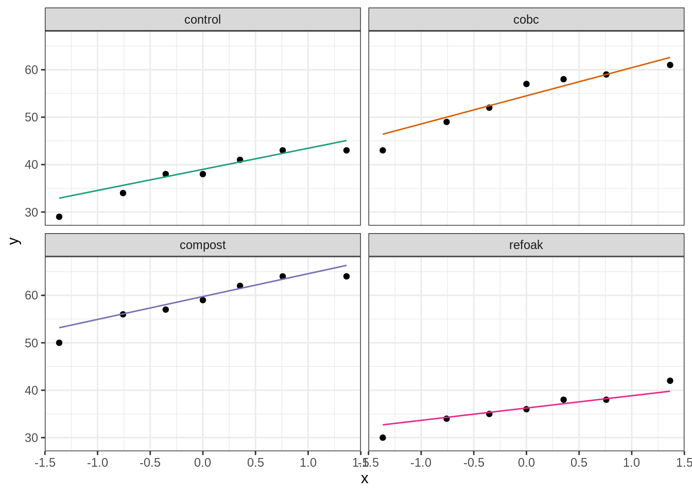
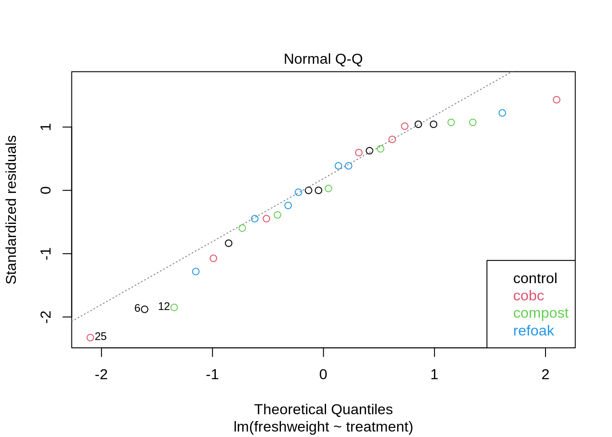

Background
In agriculture, it is important to have a high yield of crops. For lettuce plants, plants with many leaves are known to be preferred by the consumers.
One way to increase the number of leaves (or better, total leaf weight) is by using a fertilizer. Recently, there has been a tendency to rely more on natural fertilizers, such as compost. Near Ghent, the institute of research for agriculture and fishery is testing new, natural fertilization methods. One of these new fertilizers is called biochar. Biochar is a residual product from pyrolysis, a process in which biomass is burned under specific conditions (such as high pressure) in order to produce energy. Biochar is similar to charcoal, but has some very useful properties, such as retaining water in the soil. It also has a positive influence on the soil microbiome.
The lettuce dataset
The researchers hypothesize that biochar, compost and a combination of both biochar and compost can have a different influence on the growth of lettuce plants. To this end, they grew up lettuce plants in a greenhouse. The pots were filled with one of four soil types;
- Soil only (control)
- Soil supplemented with biochar (refoak)
- Soil supplemented with compost (compost)
- Soil supplemented with both biochar and compost (cobc)
The dataset freshweight_lettuce.txt contains the freshweight (in grams) for 28 lettuce plants (7 per condition). The researchers want to use an ANOVA test to assess if the treatments have a different effect on the growth of lettuce plants. If so, they will use a post-hoc test (Tuckey test) to discover which specific treatments have an effect.
Load the required libraries
library(tidyverse)
library(car)
Data import
lettuce <- read_csv("https://raw.githubusercontent.com/statOmics/PSLS21/data/freshweight_lettuce.txt")
#Take a glimpse at the data
glimpse(lettuce)
## Rows: 28
## Columns: 3
## $ id <dbl> 1, 2, 3, 4, 5, 6, 7, 8, 9, 10, 11, 12, 13, 14, 15, 16, 17,…
## $ treatment <chr> "control", "control", "control", "control", "control", "co…
## $ freshweight <dbl> 38, 34, 41, 43, 43, 29, 38, 59, 64, 57, 56, 50, 64, 62, 38…
First, we will set the treatment variable to a factor
## treatment to factor
lettuce <- lettuce %>%
mutate(treatment = as.factor(treatment))
Data exploration
## Count the number of observations per treatment
lettuce %>%
count(treatment)
Now let’s make a boxplot displaying the freshweight of each treatment condition:
lettuce %>%
ggplot(aes(x=treatment,y=freshweight,fill=treatment)) +
scale_fill_brewer(palette="RdGy") +
theme_bw() +
geom_boxplot(outlier.shape=NA) +
geom_jitter(width = 0.2) +
ggtitle("Boxplot of the freshweigth for each treatment condition") +
ylab("freshweight (gram)") +
stat_summary(fun=mean, geom="point", shape=5, size=3, color="black", fill="black")

Note that there are no clear outliers in the data. We can see that the mean freshweight is very comparable between the control and refoak treatments and between the compost and cobc treatments. We can also see that the mean freshweight is much higher in the cobc and control treatments than in the control and refoak treatments. But is this observed difference significant?
ANOVA
To study if the observed difference between the average freshweight values of the different treatment groups are significant, we may perform an ANOVA.
Checking the assumptions for ANOVA
Before we may proceed with the analysis, we must make sure that all assumptions for ANOVA are met. ANOVA has three assumptions:
- The observations are independent of each other (in all groups)
- The data (freshweigth) must be normally distributed (in all groups)
- The variability within all groups is similar
Assumption of independence
The first assumption is met; we started of with 28 lettuce plants and we randomly submitted them to one of four treatment conditions. There is no reason to believe that the plants display systematic differences between treatment groups, other than the actual treatment.
Assumption of normality
For the second assumption, we must check normality in each group.
## get qqplots for each individual treatment group
par(mfrow = c(2,2))
for(i in levels(lettuce$treatment)){
qqPlot(subset(lettuce,treatment == i)$freshweight, main = i, ylab = "")
}

According to these plots, the normality assumption is met for each group. However, we need to be careful with relying on these plots, as they are only based on 7 observations per group. Indeed, checking the assumptions of normality (and equal variances) on such small datasets can be tricky. For instance, when sampling 7 datapoints from data that has an underlying distribution that is not normally distributed, the small sample may be normally distributed by chance. Equivalently, when sampling 7 datapoints from a normal distribution, the small sample may appear not normally distributed. We can show this as follows.
Simulate from uniform distribution:
set.seed(5)
par(mfrow = c(3,2),mar=c(2, 4, 2, 0.2))
for (i in 1:6) {
x <- runif(7) ## sample 7 observations from a uniform distribution
qqPlot(x,ylab = "")
}

Even though the data originates from a uniform distribution, several samples meet the normality requirements by chance.
Sample from normal distribution:
set.seed(5)
par(mfrow = c(3,2),mar=c(2, 4, 2, 0.2))
for (i in 1:6) {
x <- rnorm(7) ## sample 7 sobservations from a normal distribution
qqPlot(x,ylab = "")
}
Even though the data originates from a normal distribution, several samples do not meet the normality requirements by chance.
Alternatively, we may generate a qq-plot of the residuals of a linear model. These residuals should be normally distributed if the data for each treatment condition is normally distributed.
fit <- lm(freshweight~treatment, lettuce)
plot(fit, which = 2,col = fit$model$treatment)
legend('bottomright', levels(fit$model$treatment), text.col = 1:4)

The data seems to be approximately normally distributed, with a slight left skew.
Assumption of equal variances
We can check the assumption of equal variance with a boxplot:
lettuce %>%
ggplot(aes(x=treatment,y=freshweight,fill=treatment)) +
scale_fill_brewer(palette="RdGy") +
theme_bw() +
geom_boxplot(outlier.shape=NA) +
geom_jitter(width = 0.2) +
ggtitle("Boxplot of the freshweigth for each treatment condition") +
ylab("freshweight (gram)") +
stat_summary(fun=mean, geom="point", shape=5, size=3, color="black", fill="black")

As a measure of variability, we may take the height of each box. This is the interval between the 25% and 75% quantile. Here we can see that this interval, as well as the length of the whiskers, is approximately equal for most groups. However, the variability of cobc does seem to be quite a bit larger than the variability in the refoak group.
With this little observations per group, it is very difficult to reliably assess the assumptions of normality and equal variances. In this tutorial, we will assume that all assumptions are met. In a later tutorial, “Kruskal_lettuce_plants.Rmd”, we will see would happen if we decide to reject these assumptions.
Modeling
fit <- lm(freshweight~treatment, data=lettuce)
fit_anova <- anova(fit)
fit_anova
The p-value of the ANOVA analysis is extremely significant (p-value = 8.308e-09), so we reject the null hypothesis that the mean freshweigth is equal for the different treatment groups. We can say that the mean freshweigth is significantly different between at least two treatment groups on the 5% significance level.
Based on this analysis, we do not yet know between which particular groups there is a significant difference. To assess this, we will perfrom the Tuckey post-hoc analysis.
Post-hoc analysis
We will perform a post-hoc analysis to look at the difference in fresweigth between each pairwise comparison of treatment groups. Importantly, with this strategy, the p-values will be automatically adjusted for multiple testing.
The null hypothesis for each pairwise test is that \(H0\) there is no difference in the average freshweight values between both groups.
The alternative hypothesis for each pairwise test states that \(HA\) there is indeed a difference in the average freshweight values between both groups.
library(multcomp, quietly = TRUE)
mcp <- glht(fit, linfct = mcp(treatment = "Tukey"))
mcp_summary <- summary(mcp)
mcp_summary
##
## Simultaneous Tests for General Linear Hypotheses
##
## Multiple Comparisons of Means: Tukey Contrasts
##
##
## Fit: lm(formula = freshweight ~ treatment, data = lettuce)
##
## Linear Hypotheses:
## Estimate Std. Error t value Pr(>|t|)
## compost - cobc == 0 4.714 2.766 1.704 0.343
## control - cobc == 0 -16.143 2.766 -5.837 <0.001 ***
## refoak - cobc == 0 -18.000 2.766 -6.508 <0.001 ***
## control - compost == 0 -20.857 2.766 -7.541 <0.001 ***
## refoak - compost == 0 -22.714 2.766 -8.213 <0.001 ***
## refoak - control == 0 -1.857 2.766 -0.671 0.907
## ---
## Signif. codes: 0 '***' 0.001 '**' 0.01 '*' 0.05 '.' 0.1 ' ' 1
## (Adjusted p values reported -- single-step method)
#We will also calculate the confidence interval on the mean differences.
mcp_confint <- confint(mcp)
mcp_confint
##
## Simultaneous Confidence Intervals
##
## Multiple Comparisons of Means: Tukey Contrasts
##
##
## Fit: lm(formula = freshweight ~ treatment, data = lettuce)
##
## Quantile = 2.7597
## 95% family-wise confidence level
##
##
## Linear Hypotheses:
## Estimate lwr upr
## compost - cobc == 0 4.7143 -2.9185 12.3471
## control - cobc == 0 -16.1429 -23.7757 -8.5101
## refoak - cobc == 0 -18.0000 -25.6328 -10.3672
## control - compost == 0 -20.8571 -28.4899 -13.2243
## refoak - compost == 0 -22.7143 -30.3471 -15.0815
## refoak - control == 0 -1.8571 -9.4899 5.7757
Conclusion
We have found an extremely significant dependence (p-value = 8.308^{-9}), between the mean freshweigth and the treatment condition on the global 5% significance level.
The mean freshweight of plants grown with compost is extremely significantly higher as compared to in control plants (Tuckey test, adjusted p-value < 0.0001, 20.9g higher, 95% CI: [13.2; 28.5]) and as compared to refoak plants (Tuckey test, adjusted p-value < 0.0001, 22.7g higher, 95% CI: [15.1; 30.3]).
The mean freshweight of plants grown with cobc is extremely significantly higher as compared to in control plants (Tuckey test, adjusted p-value < 0.0001, 16.1g higher, 95% CI: [8.5; 23.8]) and as compared to refoak plants (Tuckey test, adjusted p-value < 0.0001, 18.0g higher, 95% CI: [10.4; 25.6]).
We do not find enough evidence to claim a difference in mean freshweight between refoak and control plants or between cobc and compost plants.
We may conclude that supplementing soil with compost or with both compost and biochar will have a positive effect on the freshweigth of lettuce plants.
LS0tCnRpdGxlOiAiRXhlcmNpc2UgNy4xOiBBTk9WQSBvbiB0aGUgbGV0dHVjZSBkYXRhc2V0IC0gc29sdXRpb24iCmF1dGhvcjogIkxpZXZlbiBDbGVtZW50IGFuZCBKZXJvZW4gR2lsaXMiCmRhdGU6ICJzdGF0T21pY3MsIEdoZW50IFVuaXZlcnNpdHkgKGh0dHBzOi8vc3RhdG9taWNzLmdpdGh1Yi5pbykiCm91dHB1dDoKICAgIGh0bWxfZG9jdW1lbnQ6CiAgICAgIGNvZGVfZG93bmxvYWQ6IHRydWUKICAgICAgdGhlbWU6IGNvc21vCiAgICAgIHRvYzogdHJ1ZQogICAgICB0b2NfZmxvYXQ6IHRydWUKICAgICAgaGlnaGxpZ2h0OiB0YW5nbwogICAgICBudW1iZXJfc2VjdGlvbnM6IHRydWUKLS0tCgojIEJhY2tncm91bmQKCkluIGFncmljdWx0dXJlLCBpdCBpcyBpbXBvcnRhbnQgdG8gaGF2ZSBhIGhpZ2ggeWllbGQgb2YgY3JvcHMuIEZvciBsZXR0dWNlCnBsYW50cywgcGxhbnRzIHdpdGggbWFueSBsZWF2ZXMgYXJlIGtub3duIHRvIGJlIHByZWZlcnJlZCBieSB0aGUgY29uc3VtZXJzLgoKT25lIHdheSB0byBpbmNyZWFzZSB0aGUgbnVtYmVyIG9mIGxlYXZlcyAob3IgYmV0dGVyLCB0b3RhbApsZWFmIHdlaWdodCkgaXMgYnkgdXNpbmcgYSBmZXJ0aWxpemVyLiBSZWNlbnRseSwgdGhlcmUgaGFzIGJlZW4KYSB0ZW5kZW5jeSB0byByZWx5IG1vcmUgb24gbmF0dXJhbCBmZXJ0aWxpemVycywgc3VjaCBhcyBjb21wb3N0LgpOZWFyIEdoZW50LCB0aGUgaW5zdGl0dXRlIG9mIHJlc2VhcmNoIGZvciBhZ3JpY3VsdHVyZSBhbmQgZmlzaGVyeSBpcyB0ZXN0aW5nCm5ldywgbmF0dXJhbCBmZXJ0aWxpemF0aW9uIG1ldGhvZHMuIE9uZSBvZiB0aGVzZSBuZXcgZmVydGlsaXplcnMgaXMgY2FsbGVkCmJpb2NoYXIuIEJpb2NoYXIgaXMgYSByZXNpZHVhbCBwcm9kdWN0IGZyb20gcHlyb2x5c2lzLCBhIHByb2Nlc3MgaW4gd2hpY2gKYmlvbWFzcyBpcyBidXJuZWQgdW5kZXIgc3BlY2lmaWMgY29uZGl0aW9ucyAoc3VjaCBhcyBoaWdoIHByZXNzdXJlKSBpbiBvcmRlcgp0byBwcm9kdWNlIGVuZXJneS4gQmlvY2hhciBpcyBzaW1pbGFyIHRvIGNoYXJjb2FsLCBidXQgaGFzIHNvbWUgdmVyeSB1c2VmdWwKcHJvcGVydGllcywgc3VjaCBhcyByZXRhaW5pbmcgd2F0ZXIgaW4gdGhlIHNvaWwuIEl0IGFsc28gaGFzIGEgcG9zaXRpdmUKaW5mbHVlbmNlIG9uIHRoZSBzb2lsIG1pY3JvYmlvbWUuCgojIFRoZSBsZXR0dWNlIGRhdGFzZXQKClRoZSByZXNlYXJjaGVycyBoeXBvdGhlc2l6ZSB0aGF0IGJpb2NoYXIsIGNvbXBvc3QgYW5kCmEgY29tYmluYXRpb24gb2YgYm90aCBiaW9jaGFyIGFuZCBjb21wb3N0IGNhbiBoYXZlIGEgZGlmZmVyZW50IGluZmx1ZW5jZQpvbiB0aGUgZ3Jvd3RoIG9mIGxldHR1Y2UgcGxhbnRzLiBUbyB0aGlzIGVuZCwgdGhleSBncmV3IHVwCmxldHR1Y2UgcGxhbnRzIGluIGEgZ3JlZW5ob3VzZS4gVGhlIHBvdHMgd2VyZSBmaWxsZWQgd2l0aApvbmUgb2YgZm91ciBzb2lsIHR5cGVzOwoKMS4gU29pbCBvbmx5IChjb250cm9sKQoyLiBTb2lsIHN1cHBsZW1lbnRlZCB3aXRoIGJpb2NoYXIgKHJlZm9haykKMy4gU29pbCBzdXBwbGVtZW50ZWQgd2l0aCBjb21wb3N0IChjb21wb3N0KQo0LiBTb2lsIHN1cHBsZW1lbnRlZCB3aXRoIGJvdGggYmlvY2hhciBhbmQgY29tcG9zdCAoY29iYykKClRoZSBkYXRhc2V0IGBmcmVzaHdlaWdodF9sZXR0dWNlLnR4dGAgY29udGFpbnMgdGhlIGZyZXNod2VpZ2h0CihpbiBncmFtcykgZm9yIDI4IGxldHR1Y2UgcGxhbnRzICg3IHBlciBjb25kaXRpb24pLiBUaGUgcmVzZWFyY2hlcnMKd2FudCB0byB1c2UgYW4gQU5PVkEgdGVzdCB0byBhc3Nlc3MgaWYgdGhlIHRyZWF0bWVudHMgaGF2ZSBhIGRpZmZlcmVudCBlZmZlY3QKb24gdGhlIGdyb3d0aCBvZiBsZXR0dWNlIHBsYW50cy4gSWYgc28sIHRoZXkgd2lsbCB1c2UgYSBwb3N0LWhvYyB0ZXN0CihUdWNrZXkgdGVzdCkgdG8gZGlzY292ZXIgd2hpY2ggc3BlY2lmaWMgdHJlYXRtZW50cyBoYXZlIGFuIGVmZmVjdC4KCkxvYWQgdGhlIHJlcXVpcmVkIGxpYnJhcmllcwoKYGBge3IsIG1lc3NhZ2UgPSBGQUxTRSwgd2FybmluZz1GQUxTRX0KbGlicmFyeSh0aWR5dmVyc2UpCmxpYnJhcnkoY2FyKQpgYGAKCiMgRGF0YSBpbXBvcnQKCmBgYHtyLG1lc3NhZ2U9RkFMU0V9CmxldHR1Y2UgPC0gcmVhZF9jc3YoImh0dHBzOi8vcmF3LmdpdGh1YnVzZXJjb250ZW50LmNvbS9zdGF0T21pY3MvUFNMUzIxL2RhdGEvZnJlc2h3ZWlnaHRfbGV0dHVjZS50eHQiKQojVGFrZSBhIGdsaW1wc2UgYXQgdGhlIGRhdGEKZ2xpbXBzZShsZXR0dWNlKQpgYGAKCkZpcnN0LCB3ZSB3aWxsIHNldCB0aGUgYHRyZWF0bWVudGAgdmFyaWFibGUgdG8gYSBmYWN0b3IKCmBgYHtyfQojIyB0cmVhdG1lbnQgdG8gZmFjdG9yCmxldHR1Y2UgPC0gbGV0dHVjZSAlPiUKICBtdXRhdGUodHJlYXRtZW50ID0gYXMuZmFjdG9yKHRyZWF0bWVudCkpCmBgYAoKIyBEYXRhIGV4cGxvcmF0aW9uCgpgYGB7cn0KIyMgQ291bnQgdGhlIG51bWJlciBvZiBvYnNlcnZhdGlvbnMgcGVyIHRyZWF0bWVudApsZXR0dWNlICU+JQogIGNvdW50KHRyZWF0bWVudCkKYGBgCgpOb3cgbGV0J3MgbWFrZSBhIGJveHBsb3QgZGlzcGxheWluZyB0aGUgZnJlc2h3ZWlnaHQgb2YgZWFjaCB0cmVhdG1lbnQgY29uZGl0aW9uOgoKYGBge3J9CmxldHR1Y2UgJT4lCiAgZ2dwbG90KGFlcyh4PXRyZWF0bWVudCx5PWZyZXNod2VpZ2h0LGZpbGw9dHJlYXRtZW50KSkgKwogICAgc2NhbGVfZmlsbF9icmV3ZXIocGFsZXR0ZT0iUmRHeSIpICsKICAgIHRoZW1lX2J3KCkgKwogICAgZ2VvbV9ib3hwbG90KG91dGxpZXIuc2hhcGU9TkEpICsKICAgIGdlb21faml0dGVyKHdpZHRoID0gMC4yKSArCiAgICBnZ3RpdGxlKCJCb3hwbG90IG9mIHRoZSBmcmVzaHdlaWd0aCBmb3IgZWFjaCB0cmVhdG1lbnQgY29uZGl0aW9uIikgKwogICAgeWxhYigiZnJlc2h3ZWlnaHQgKGdyYW0pIikgKwogICAgc3RhdF9zdW1tYXJ5KGZ1bj1tZWFuLCBnZW9tPSJwb2ludCIsIHNoYXBlPTUsIHNpemU9MywgY29sb3I9ImJsYWNrIiwgZmlsbD0iYmxhY2siKQpgYGAKCk5vdGUgdGhhdCB0aGVyZSBhcmUgbm8gY2xlYXIgb3V0bGllcnMgaW4gdGhlIGRhdGEuCldlIGNhbiBzZWUgdGhhdCB0aGUgbWVhbiBmcmVzaHdlaWdodCBpcyB2ZXJ5IGNvbXBhcmFibGUKYmV0d2VlbiB0aGUgY29udHJvbCBhbmQgcmVmb2FrIHRyZWF0bWVudHMgYW5kIGJldHdlZW4gdGhlCmNvbXBvc3QgYW5kIGNvYmMgdHJlYXRtZW50cy4gV2UgY2FuIGFsc28gc2VlIHRoYXQgdGhlIG1lYW4KZnJlc2h3ZWlnaHQgaXMgbXVjaCBoaWdoZXIgaW4gdGhlIGNvYmMgYW5kIGNvbnRyb2wgdHJlYXRtZW50cwp0aGFuIGluIHRoZSBjb250cm9sIGFuZCByZWZvYWsgdHJlYXRtZW50cy4gQnV0IGlzIHRoaXMKb2JzZXJ2ZWQgZGlmZmVyZW5jZSBzaWduaWZpY2FudD8KCiMgQU5PVkEKClRvIHN0dWR5IGlmIHRoZSBvYnNlcnZlZCBkaWZmZXJlbmNlIGJldHdlZW4gdGhlCmF2ZXJhZ2UgZnJlc2h3ZWlnaHQgdmFsdWVzIG9mIHRoZSBkaWZmZXJlbnQgdHJlYXRtZW50IGdyb3VwcwphcmUgc2lnbmlmaWNhbnQsIHdlIG1heSBwZXJmb3JtIGFuIEFOT1ZBLgoKIyMgRm9ybXVsYXRlIG51bGwgYW5kIGFsdGVybmF0aXZlIGh5cG90aGVzZXMKClRoZSBudWxsIGh5cG90aGVzaXMgb2YgQU5PVkEgc3RhdGVzIHRoYXQ6CiRIMCQ6IFRoZSBtZWFuIGZyZXNod2VpZ3RoIGlzIGVxdWFsIGJldHdlZW4gdGhlIGRpZmZlcmVudCB0cmVhdG1lbnQgZ3JvdXBzLgoKVGhlIGFsdGVybmF0aXZlIGh5cG90aGVzaXMgb2YgQU5PVkEgc3RhdGVzIHRoYXQ6CiRIQSQ6IFRoZSBtZWFuIGZyZXNod2VpZ3RoIGZvciBhdCBsZWFzdCBvbmUgdHJlYXRtZW50IGdyb3VwIGlzIGRpZmZlcmVudApmcm9tIHRoZSBtZWFuIGZyZXNod2VpZ2h0IGluIGF0IGxlYXN0IG9uZSBvdGhlciB0cmVhdG1lbnQgZ3JvdXAuCgojIyBDaGVja2luZyB0aGUgYXNzdW1wdGlvbnMgZm9yIEFOT1ZBCgpCZWZvcmUgd2UgbWF5IHByb2NlZWQgd2l0aCB0aGUgYW5hbHlzaXMsIHdlIG11c3QgbWFrZSBzdXJlIHRoYXQgYWxsCmFzc3VtcHRpb25zIGZvciBBTk9WQSBhcmUgbWV0LiBBTk9WQSBoYXMgdGhyZWUgYXNzdW1wdGlvbnM6CgoxLiBUaGUgb2JzZXJ2YXRpb25zIGFyZSBpbmRlcGVuZGVudCBvZiBlYWNoIG90aGVyIChpbiBhbGwgZ3JvdXBzKQoyLiBUaGUgZGF0YSAoZnJlc2h3ZWlndGgpIG11c3QgYmUgbm9ybWFsbHkgZGlzdHJpYnV0ZWQgKGluIGFsbCBncm91cHMpCjMuIFRoZSB2YXJpYWJpbGl0eSB3aXRoaW4gYWxsIGdyb3VwcyBpcyBzaW1pbGFyCgojIyMgQXNzdW1wdGlvbiBvZiBpbmRlcGVuZGVuY2UKClRoZSBmaXJzdCBhc3N1bXB0aW9uIGlzIG1ldDsgd2Ugc3RhcnRlZCBvZiB3aXRoIDI4IGxldHR1Y2UgcGxhbnRzIGFuZAp3ZSByYW5kb21seSBzdWJtaXR0ZWQgdGhlbSB0byBvbmUgb2YgZm91ciB0cmVhdG1lbnQgY29uZGl0aW9ucy4gVGhlcmUKaXMgbm8gcmVhc29uIHRvIGJlbGlldmUgdGhhdCB0aGUgcGxhbnRzIGRpc3BsYXkgc3lzdGVtYXRpYyBkaWZmZXJlbmNlcwpiZXR3ZWVuIHRyZWF0bWVudCBncm91cHMsIG90aGVyIHRoYW4gdGhlIGFjdHVhbCB0cmVhdG1lbnQuCgojIyMgQXNzdW1wdGlvbiBvZiBub3JtYWxpdHkKCkZvciB0aGUgc2Vjb25kIGFzc3VtcHRpb24sIHdlIG11c3QgY2hlY2sgbm9ybWFsaXR5IGluIGVhY2ggZ3JvdXAuCgpgYGB7cn0KIyMgZ2V0IHFxcGxvdHMgZm9yIGVhY2ggaW5kaXZpZHVhbCB0cmVhdG1lbnQgZ3JvdXAKcGFyKG1mcm93ID0gYygyLDIpKQpmb3IoaSBpbiBsZXZlbHMobGV0dHVjZSR0cmVhdG1lbnQpKXsKICBxcVBsb3Qoc3Vic2V0KGxldHR1Y2UsdHJlYXRtZW50ID09IGkpJGZyZXNod2VpZ2h0LCBtYWluID0gaSwgeWxhYiA9ICIiKQp9CmBgYAoKQWNjb3JkaW5nIHRvIHRoZXNlIHBsb3RzLCB0aGUgbm9ybWFsaXR5IGFzc3VtcHRpb24gaXMgbWV0CmZvciBlYWNoIGdyb3VwLiBIb3dldmVyLCB3ZSBuZWVkIHRvIGJlIGNhcmVmdWwgd2l0aCByZWx5aW5nIG9uCnRoZXNlIHBsb3RzLCBhcyB0aGV5IGFyZSBvbmx5IGJhc2VkIG9uIDcgb2JzZXJ2YXRpb25zIHBlciBncm91cC4KSW5kZWVkLCBjaGVja2luZyB0aGUgYXNzdW1wdGlvbnMgb2Ygbm9ybWFsaXR5IChhbmQgZXF1YWwgdmFyaWFuY2VzKQpvbiBzdWNoIHNtYWxsIGRhdGFzZXRzIGNhbiBiZSB0cmlja3kuIEZvciBpbnN0YW5jZSwgd2hlbgpzYW1wbGluZyA3IGRhdGFwb2ludHMgZnJvbSBkYXRhIHRoYXQgaGFzIGFuIHVuZGVybHlpbmcgZGlzdHJpYnV0aW9uCnRoYXQgaXMgbm90IG5vcm1hbGx5IGRpc3RyaWJ1dGVkLCB0aGUgc21hbGwgc2FtcGxlIG1heSBiZSBub3JtYWxseQpkaXN0cmlidXRlZCBieSBjaGFuY2UuIEVxdWl2YWxlbnRseSwgd2hlbiBzYW1wbGluZyA3IGRhdGFwb2ludHMKZnJvbSBhIG5vcm1hbCBkaXN0cmlidXRpb24sIHRoZSBzbWFsbCBzYW1wbGUgbWF5IGFwcGVhciBub3Qgbm9ybWFsbHkKZGlzdHJpYnV0ZWQuIFdlIGNhbiBzaG93IHRoaXMgYXMgZm9sbG93cy4KClNpbXVsYXRlIGZyb20gdW5pZm9ybSBkaXN0cmlidXRpb246CgpgYGB7cn0Kc2V0LnNlZWQoNSkKcGFyKG1mcm93ID0gYygzLDIpLG1hcj1jKDIsIDQsIDIsIDAuMikpCmZvciAoaSBpbiAxOjYpIHsKICB4IDwtIHJ1bmlmKDcpICMjIHNhbXBsZSA3IG9ic2VydmF0aW9ucyBmcm9tIGEgdW5pZm9ybSBkaXN0cmlidXRpb24KICBxcVBsb3QoeCx5bGFiID0gIiIpCn0KYGBgCgpFdmVuIHRob3VnaCB0aGUgZGF0YSBvcmlnaW5hdGVzIGZyb20gYSB1bmlmb3JtIGRpc3RyaWJ1dGlvbiwgc2V2ZXJhbApzYW1wbGVzIG1lZXQgdGhlIG5vcm1hbGl0eSByZXF1aXJlbWVudHMgYnkgY2hhbmNlLgoKU2FtcGxlIGZyb20gbm9ybWFsIGRpc3RyaWJ1dGlvbjoKCmBgYHtyfQpzZXQuc2VlZCg1KQpwYXIobWZyb3cgPSBjKDMsMiksbWFyPWMoMiwgNCwgMiwgMC4yKSkKZm9yIChpIGluIDE6NikgewogIHggPC0gcm5vcm0oNykgIyMgc2FtcGxlIDcgc29ic2VydmF0aW9ucyBmcm9tIGEgbm9ybWFsIGRpc3RyaWJ1dGlvbgogIHFxUGxvdCh4LHlsYWIgPSAiIikKfQpgYGAKCkV2ZW4gdGhvdWdoIHRoZSBkYXRhIG9yaWdpbmF0ZXMgZnJvbSBhIG5vcm1hbCBkaXN0cmlidXRpb24sIHNldmVyYWwKc2FtcGxlcyBkbyBub3QgbWVldCB0aGUgbm9ybWFsaXR5IHJlcXVpcmVtZW50cyBieSBjaGFuY2UuCgpBbHRlcm5hdGl2ZWx5LCB3ZSBtYXkgZ2VuZXJhdGUgYSBxcS1wbG90IG9mIHRoZSByZXNpZHVhbHMKb2YgYSBsaW5lYXIgbW9kZWwuIFRoZXNlIHJlc2lkdWFscyBzaG91bGQgYmUgbm9ybWFsbHkgZGlzdHJpYnV0ZWQKaWYgdGhlIGRhdGEgZm9yIGVhY2ggdHJlYXRtZW50IGNvbmRpdGlvbiBpcyBub3JtYWxseSBkaXN0cmlidXRlZC4KCmBgYHtyfQpmaXQgPC0gbG0oZnJlc2h3ZWlnaHR+dHJlYXRtZW50LCBsZXR0dWNlKQpwbG90KGZpdCwgd2hpY2ggPSAyLGNvbCA9IGZpdCRtb2RlbCR0cmVhdG1lbnQpCmxlZ2VuZCgnYm90dG9tcmlnaHQnLCBsZXZlbHMoZml0JG1vZGVsJHRyZWF0bWVudCksIHRleHQuY29sID0gMTo0KQpgYGAKClRoZSBkYXRhIHNlZW1zIHRvIGJlIGFwcHJveGltYXRlbHkgbm9ybWFsbHkgZGlzdHJpYnV0ZWQsCndpdGggYSBzbGlnaHQgbGVmdCBza2V3LgoKIyMjIEFzc3VtcHRpb24gb2YgZXF1YWwgdmFyaWFuY2VzCgpXZSBjYW4gY2hlY2sgdGhlIGFzc3VtcHRpb24gb2YgZXF1YWwgdmFyaWFuY2Ugd2l0aCBhIGJveHBsb3Q6CgpgYGB7cn0KbGV0dHVjZSAlPiUKICBnZ3Bsb3QoYWVzKHg9dHJlYXRtZW50LHk9ZnJlc2h3ZWlnaHQsZmlsbD10cmVhdG1lbnQpKSArCiAgc2NhbGVfZmlsbF9icmV3ZXIocGFsZXR0ZT0iUmRHeSIpICsKICB0aGVtZV9idygpICsKICBnZW9tX2JveHBsb3Qob3V0bGllci5zaGFwZT1OQSkgKwogIGdlb21faml0dGVyKHdpZHRoID0gMC4yKSArCiAgZ2d0aXRsZSgiQm94cGxvdCBvZiB0aGUgZnJlc2h3ZWlndGggZm9yIGVhY2ggdHJlYXRtZW50IGNvbmRpdGlvbiIpICsKICB5bGFiKCJmcmVzaHdlaWdodCAoZ3JhbSkiKSArCiAgc3RhdF9zdW1tYXJ5KGZ1bj1tZWFuLCBnZW9tPSJwb2ludCIsIHNoYXBlPTUsIHNpemU9MywgY29sb3I9ImJsYWNrIiwgZmlsbD0iYmxhY2siKQpgYGAKCkFzIGEgbWVhc3VyZSBvZiB2YXJpYWJpbGl0eSwgd2UgbWF5IHRha2UgdGhlIGhlaWdodApvZiBlYWNoIGJveC4gVGhpcyBpcyB0aGUgaW50ZXJ2YWwgYmV0d2Vlbgp0aGUgMjUlIGFuZCA3NSUgcXVhbnRpbGUuIEhlcmUgd2UgY2FuIHNlZSB0aGF0IHRoaXMKaW50ZXJ2YWwsIGFzIHdlbGwgYXMgdGhlIGxlbmd0aCBvZiB0aGUgd2hpc2tlcnMsIGlzCmFwcHJveGltYXRlbHkgZXF1YWwgZm9yIG1vc3QgZ3JvdXBzLiBIb3dldmVyLCB0aGUKdmFyaWFiaWxpdHkgb2YgY29iYyBkb2VzIHNlZW0gdG8gYmUgcXVpdGUgYSBiaXQgbGFyZ2VyCnRoYW4gdGhlIHZhcmlhYmlsaXR5IGluIHRoZSByZWZvYWsgZ3JvdXAuCgpXaXRoIHRoaXMgbGl0dGxlIG9ic2VydmF0aW9ucyBwZXIgZ3JvdXAsIGl0IGlzIHZlcnkKZGlmZmljdWx0IHRvIHJlbGlhYmx5IGFzc2VzcyB0aGUgYXNzdW1wdGlvbnMgb2Ygbm9ybWFsaXR5IGFuZCBlcXVhbCB2YXJpYW5jZXMuCkluIHRoaXMgdHV0b3JpYWwsIHdlIHdpbGwgYXNzdW1lIHRoYXQgYWxsIGFzc3VtcHRpb25zIGFyZSBtZXQuCioqSW4gYSBsYXRlciB0dXRvcmlhbCwgIktydXNrYWxfbGV0dHVjZV9wbGFudHMuUm1kIiwqKgoqKndlIHdpbGwgc2VlIHdvdWxkIGhhcHBlbiBpZiB3ZSBkZWNpZGUgdG8gcmVqZWN0IHRoZXNlIGFzc3VtcHRpb25zLioqCgojIyBNb2RlbGluZwoKYGBge3J9CmZpdCA8LSBsbShmcmVzaHdlaWdodH50cmVhdG1lbnQsIGRhdGE9bGV0dHVjZSkKZml0X2Fub3ZhIDwtIGFub3ZhKGZpdCkKZml0X2Fub3ZhCmBgYAoKVGhlIHAtdmFsdWUgb2YgdGhlIEFOT1ZBIGFuYWx5c2lzIGlzIGV4dHJlbWVseSBzaWduaWZpY2FudAoocC12YWx1ZSA9IGByIGZvcm1hdChmaXRfYW5vdmEkIlByKD5GKSJbMV0sZGlnaXRzPTQpYCksCnNvIHdlIHJlamVjdCB0aGUgbnVsbCBoeXBvdGhlc2lzIHRoYXQgdGhlIG1lYW4KZnJlc2h3ZWlndGggaXMgZXF1YWwgZm9yIHRoZSBkaWZmZXJlbnQgdHJlYXRtZW50IGdyb3Vwcy4KV2UgY2FuIHNheSB0aGF0IHRoZSBtZWFuIGZyZXNod2VpZ3RoIGlzIHNpZ25pZmljYW50bHkgZGlmZmVyZW50CmJldHdlZW4gYXQgbGVhc3QgdHdvIHRyZWF0bWVudCBncm91cHMgb24gdGhlIDUlIHNpZ25pZmljYW5jZSBsZXZlbC4KCkJhc2VkIG9uIHRoaXMgYW5hbHlzaXMsIHdlIGRvIG5vdCB5ZXQga25vdyBiZXR3ZWVuIHdoaWNoIHBhcnRpY3VsYXIKZ3JvdXBzIHRoZXJlIGlzIGEgc2lnbmlmaWNhbnQgZGlmZmVyZW5jZS4gVG8gYXNzZXNzIHRoaXMsIHdlIHdpbGwKcGVyZnJvbSB0aGUgVHVja2V5IHBvc3QtaG9jIGFuYWx5c2lzLgoKIyMgUG9zdC1ob2MgYW5hbHlzaXMKCldlIHdpbGwgcGVyZm9ybSBhIHBvc3QtaG9jIGFuYWx5c2lzIHRvIGxvb2sgYXQgdGhlIGRpZmZlcmVuY2UKaW4gZnJlc3dlaWd0aCBiZXR3ZWVuIGVhY2ggcGFpcndpc2UgY29tcGFyaXNvbiBvZiB0cmVhdG1lbnQgZ3JvdXBzLgpJbXBvcnRhbnRseSwgd2l0aCB0aGlzIHN0cmF0ZWd5LCB0aGUgcC12YWx1ZXMgd2lsbCBiZSBhdXRvbWF0aWNhbGx5CmFkanVzdGVkIGZvciBtdWx0aXBsZSB0ZXN0aW5nLgoKVGhlIG51bGwgaHlwb3RoZXNpcyBmb3IgZWFjaCBwYWlyd2lzZSB0ZXN0IGlzIHRoYXQKJEgwJCB0aGVyZSBpcyBubyBkaWZmZXJlbmNlIGluIHRoZSBhdmVyYWdlIGZyZXNod2VpZ2h0IHZhbHVlcyBiZXR3ZWVuCmJvdGggZ3JvdXBzLgoKVGhlIGFsdGVybmF0aXZlIGh5cG90aGVzaXMgZm9yIGVhY2ggcGFpcndpc2UgdGVzdCBzdGF0ZXMgdGhhdAokSEEkIHRoZXJlIGlzIGluZGVlZCBhIGRpZmZlcmVuY2UgaW4gdGhlIGF2ZXJhZ2UgZnJlc2h3ZWlnaHQgdmFsdWVzCmJldHdlZW4gYm90aCBncm91cHMuCgpgYGB7cixtZXNzYWdlPUZBTFNFfQpsaWJyYXJ5KG11bHRjb21wLCBxdWlldGx5ID0gVFJVRSkKbWNwIDwtIGdsaHQoZml0LCBsaW5mY3QgPSBtY3AodHJlYXRtZW50ID0gIlR1a2V5IikpCm1jcF9zdW1tYXJ5IDwtIHN1bW1hcnkobWNwKQptY3Bfc3VtbWFyeQoKI1dlIHdpbGwgYWxzbyBjYWxjdWxhdGUgdGhlIGNvbmZpZGVuY2UgaW50ZXJ2YWwgb24gdGhlIG1lYW4gZGlmZmVyZW5jZXMuCm1jcF9jb25maW50IDwtIGNvbmZpbnQobWNwKQptY3BfY29uZmludApgYGAKCiMjIENvbmNsdXNpb24KCldlIGhhdmUgZm91bmQgYW4gZXh0cmVtZWx5IHNpZ25pZmljYW50IGRlcGVuZGVuY2UKKHAtdmFsdWUgPSBgciByb3VuZChmaXRfYW5vdmEkIlByKD5GKSJbMV0sZGlnaXRzPTEyKWApLApiZXR3ZWVuIHRoZSBtZWFuIGZyZXNod2VpZ3RoIGFuZCB0aGUgdHJlYXRtZW50IGNvbmRpdGlvbgpvbiB0aGUgZ2xvYmFsIDUlIHNpZ25pZmljYW5jZSBsZXZlbC4KClRoZSBtZWFuIGZyZXNod2VpZ2h0IG9mIHBsYW50cyBncm93biB3aXRoIGNvbXBvc3QgaXMgZXh0cmVtZWx5CnNpZ25pZmljYW50bHkgaGlnaGVyIGFzIGNvbXBhcmVkIHRvIGluIGNvbnRyb2wgcGxhbnRzIChUdWNrZXkgdGVzdCwKYWRqdXN0ZWQgcC12YWx1ZSA8IDAuMDAwMSwgMjAuOWcgaGlnaGVyLCA5NSUgQ0k6IFsxMy4yOyAyOC41XSkKYW5kIGFzIGNvbXBhcmVkIHRvIHJlZm9hayBwbGFudHMgKFR1Y2tleSB0ZXN0LCBhZGp1c3RlZApwLXZhbHVlIDwgMC4wMDAxLCAyMi43ZyBoaWdoZXIsIDk1JSBDSTogWzE1LjE7IDMwLjNdKS4KClRoZSBtZWFuIGZyZXNod2VpZ2h0IG9mIHBsYW50cyBncm93biB3aXRoIGNvYmMgaXMgZXh0cmVtZWx5CnNpZ25pZmljYW50bHkgaGlnaGVyIGFzIGNvbXBhcmVkIHRvIGluIGNvbnRyb2wgcGxhbnRzIChUdWNrZXkgdGVzdCwKYWRqdXN0ZWQgcC12YWx1ZSA8IDAuMDAwMSwgMTYuMWcgaGlnaGVyLCA5NSUgQ0k6IFs4LjU7IDIzLjhdKQphbmQgYXMgY29tcGFyZWQgdG8gcmVmb2FrIHBsYW50cyAoVHVja2V5IHRlc3QsIGFkanVzdGVkCnAtdmFsdWUgPCAwLjAwMDEsIDE4LjBnIGhpZ2hlciwgOTUlIENJOiBbMTAuNDsgMjUuNl0pLgoKV2UgZG8gbm90IGZpbmQgZW5vdWdoIGV2aWRlbmNlIHRvIGNsYWltIGEgZGlmZmVyZW5jZSBpbiBtZWFuCmZyZXNod2VpZ2h0IGJldHdlZW4gcmVmb2FrIGFuZCBjb250cm9sIHBsYW50cyBvciBiZXR3ZWVuIGNvYmMKYW5kIGNvbXBvc3QgcGxhbnRzLgoKV2UgbWF5IGNvbmNsdWRlIHRoYXQgc3VwcGxlbWVudGluZyBzb2lsIHdpdGggY29tcG9zdCBvciB3aXRoCmJvdGggY29tcG9zdCBhbmQgYmlvY2hhciB3aWxsIGhhdmUgYSBwb3NpdGl2ZSBlZmZlY3Qgb24gdGhlCmZyZXNod2VpZ3RoIG9mIGxldHR1Y2UgcGxhbnRzLgo=